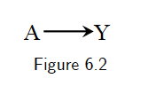
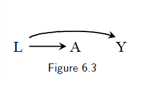

6. Graphical representation of causal effects
The use of graphs in causal inference problems makes it easier to follow a sensible advice: draw your assumptions before your conclusions.
6.1 Causal diagrams
Causal directed acyclic graphs
We define a DAG \(G\) to be a graph whose nodes are random variables \(V=(V_1,..., V_M)\) with directed edges and no directed cycles. We use \(PA_m\) to denote the parents of \(V_m\), i.e., the set of nodes from which there is a direct arrow into \(V_m\). The variable \(V_m\) is a descendant of \(V_j\) if there is a sequence of nodes connected by edges between \(V_j\) and \(V_m\) such that, following the direction indicated by the arrows, one can reach \(V_m\) by starting at \(V_j\). We adopt the ordering convention that if \(m>j\), \(V_m\) is not an ancestor of \(V_j\). We define the distribution of \(V\) to be Markov with respect to a DAG \(G\) if for each \(j\), \(V_j\) is independent of its non-descendants conditional on its parents.
A causal DAG is a DAG in which 1) the lack of an arrow from node \(V_j\) to \(V_m\) can be interpreted as the absence of a direct causal effect of \(V_j\) on \(V_m\) relative to the other variables on the graph, 2) all common causes, even if unmeasured, of any pair of variables on the graph are themselves on the graph, and 3) any variable is a cause of its descendants.
Causal Markov assumption: conditional on its direct causes, a variable \(V_j\) is independent of any variable for which it is not a cause. That is, conditional on its parents, \(V_j\) is independent of its non-descendants. Mathematically, it’s equivalent to the statement that the density \(f(V)\) of the variables \(V\) in DAG \(G\) satisfies the Markov factorization \[ f(v)=\prod_{i=1}^{M}f(v_j|pa_{j}). \]
Proof. We want to show the equivalence. We have \[f(v)=f(v_1)\prod_{i=2}^{M}f(v_j|v_1,..., v_{j-1} ).\] Based on the Markov assumption and the ordering convention, we have \[f(v_j|v_1,..., v_{j-1})=f(v_j|pa_{j}).\] Therefore, we have \(f(v)=\prod_{i=1}^{M}f(v_j|pa_{j})\).
Theorem 20.3 in the book All of Statistics also has an explanation.
Examples
- A marginally randomized experiment can be represented by the following causal DAG: 
For example, if we know that aspirin use \(A\) has a preventive causal effect on the risk of heart disease \(Y\), i.e., \(P(Y^{a=1}=1)\ne P(Y^{a=0}=1)\). The causal diagram in Figure 6.2 is the graphical translation of this knowledge for an experiment in which aspirin \(A\) is randomly, and unconditionally, assigned.
- A conditionally randomized experiment can be represented by the following causal DAG:

Note this figure can also represent an observational study. Figure 6.1 represents an observational study in which we are willing to assume that the assignment of \(A\) has \(L\) as parent and no other causes of \(Y\). Otherwise, those causes of \(Y\), even if unmeasured, would need to be included in the diagram, as they would be common causes of \(A\) and \(Y\).
- Suppose we know that carrying a lighter \(A\) has no causal effect on anyone’s risk of lung cancer \(Y\), i.e., \(P(Y^{a=1}=1)=P(Y^{a=0}=1)\), and that cigarette smoking \(L\) hs a causal effect on both carrying a lighter \(A\) and lung cancer \(Y\). The causal diagram in Figure 6.3 is the graphical translation of this knowledge.

6.2 Causal diagrams and marginal independence
Causal diagrams are a simple way to encode our subject-matter knowledge, and our assumptions, about the qualitative causal structure of a problem. Causal diagrams also encode information about potential associations between the variables in the causal network. It is precisely this simultaneous representation of association and causation that makes causal diagrams such an attractive tool.
When one knows that \(A\) has a causal effect on \(Y\), as in Figure 6.2, then one should also generally expect \(A\) and \(Y\) to be associated. This is consistenct with the fact that, in an ideal randomized experiment with unconditional exchangeability, causation \(P(Y^{a=1}=1)\ne P(Y^{a=0}=1)\) implies association \(P(Y=1|A=1)\ne P(Y=1|A=0)\), and vice versa.
In Figure 6.3, we have \(P(Y^{a=1}=1)=P(Y^{a=0}=1)\). But \(P(Y=1|A=1)\ne P(Y=1|A=0)\). See the book for an intuitive explanation.
Consider the following causal DAG:
The common effect \(L\) is referred to as a collider on the path \(A\rightarrow L\leftarrow Y\) because two arrowheads collide on this node. Colliders, unlike other variables, block the flow of association along the path on which they lie. Thus, \(A\) and \(Y\) are independent because the only path between them, \(A\rightarrow L\leftarrow Y\), is blocked by the collider \(L\).
- In summary, two variables are marginally associated if one causes the other, or if they share common causes. Otherwise they will be marginally independent.
6.3 Causal diagrams and conditional independence
- Consider the following causal DAG:
Question: is there an association between \(A\) and \(Y\) within levels of (conditional on) \(B\)?
Conclusion: Even though \(A\) and \(Y\) are marginally associated, \(A\) and \(Y\) are conditionally independent given \(B\). Graphically, we say that a box placed around variable \(B\) blocks the flow of association through the path \(A\rightarrow B\rightarrow Y\).
- Consider the following causal DAG:
Question: is \(A\) associated with \(Y\) conditional on \(L\)?
Conclusion: \(A\) and \(Y\) are conditionally independent given \(L\).
Proof. By Markov assumption.
- Consider the following causal DAG:
Question: Is \(A\) associated with \(Y\) conditional on \(L\)?
Conclusion:
Appendix B: The flow of association and causation in graphs
This section is mainly from Brady Neal’s Introduction to Causal Inference from a Machine Learning Perspective.
Graph terminology
- If two parents \(X\) and \(Y\) share some child \(Z\), but there is no edge connecting \(X\) and \(Y\), then \(X\rightarrow Z\leftarrow Y\) is known as an immorality.
Bayesian networks
Chain rule: \(P(x_1, x_2,..., x_n)=P(x_1)\prod_i P(x_i|x_{i-1},...,x_1)\)
Given a probability distribution and a corresponding DAG, we can formalize the specification of independencies with the local Markov assumption: Given its parents in the DAG, a node \(X\) is independent of its non-descendants.
A probability distribution is said to be locally Markov with respect to a DAG if they satisfy the local Markov assumption.
Bayesian network factorization: Given a probability distribution P and a DAG G, P factorizes according to \(G\) if \(P(x_1,..., x_n)=\prod_i P(x_i|pa_i)\).
Local Markov assumption and Bayesian network factorization are equivalent.
- The local Markov assumption only gives us information about the independencies in P that a DAG implies. It does not even tell us that if \(X\) and \(Y\) are adjacent in the DAGs, then \(X\) and \(Y\) are dependent. And this additional information is very commonly assumed in causal DAGs.To get the guaranteed dependence between adjacent nodes, we generally assume a slightly stronger assumption than the local Markov assumption, which is called the
minimality assumption:
- Local Markov assumption
- Adjacent nodes in the DAG are dependent
- Note the second part of minimality assumption is equivalent to the following way: if we were to remove any edges from the DAG, P would not be Markov with respect to the graph with the removed edges.
- We show this equivalence by a concrete example: see the following DAG.
We first show part 2 of the minimality assumption implies the above statement. Based on the local Markov assumption, we have \[f(x_1, x_2, x_3, x_4)=f(x_1)f(x_2|x_1)f(x_3|x_1, x_2)f(x_4|x_3). \] Consider the case that we remove the edge \(X_2\rightarrow X_3\). If \(P\) is Markov with respect to the graph with the removed edge, then we have \[f(x_1, x_2, x_3, x_4)=f(x_1)f(x_2|x_1)f(x_3|x_1)f(x_4|x_3).\] Therefore, we have \[f(x_3|x_1, x_2)=f(x_3|x_1),\] which implies that \(f(x_3|x_2)=f(x_3)\). Then \(X_3\) is independent of \(X_2\). This contracts with part 2 of the minimality assumption. So we have \(P\) is not Markov with respect to the graph with the removed edges. Next, we show the other direction. Since \(P\) would not be Markov respect to the graph with the removed edges, so we have \(f(x_3|x_1, x_2)\ne f(x_3|x_1)\), which implies that \(f(x_3|x_2)\ne f(x_3)\). Hence we have \(X_3\) is dependent of \(X_2\).
- We show this equivalence by a concrete example: see the following DAG.
- To see why the assumption is named “minimality”. We know that if \(P\) is Markov with respect to a DAG \(G\), then \(P\) satisfies a set of independencies that are specific to the structure of \(G\). If \(P\) and \(G\) also satisfy minimality, then this set of independencies is minimal in the sense the \(P\) does not satisfy any additional independencies. This is equivalent to saying that adjacent nodes are dependent. (Why?)
Causal graphs
What is a cause? A variable \(X\) is said to be a cause of a variable \(Y\) if \(Y\) can change in response to changes in \(X\). (Based on the lemma in Appendix A, this definition implies if \(X\) is a cause of \(Y\), then \(X\) and \(Y\) are dependent.)
- (Strict) causal edges assumption: In a directed graph, every parent is a direct cause of all its children.
- Based on the definition of a cause, this assumption implies that adjacent nodes are dependent.
- This is indeed the second part of the minimality assumption.
Two-node graphs and graphical building blocks
Flow of association: by “flow of association”, we mean whether any two nodes in a graph are associated or not associated. Another way of saying this is whether two nodes are statistically dependent or statistically independent.
- Two unconnected nodes
The Bayesian network factorization (or equivalently the local Markov assumption) implies the two nodes \(X_1\) and \(X_2\) are unassociated (independent) in this building block.
- Two connected nodes
The causal edges assumption implies \(X_1\) and \(X_2\) are associated.
Chains and forks
In both chains and forks, \(X_1\) and \(X_2\) are depenedent, and \(X_2\) and \(X_3\) are dependent based on the causal edges assumption (or the second part of the minimality assumption).
- Is \(X_1\) and \(X_3\) associated in chains and forks?
- Usually, \(X_1\) and \(X_3\) are associated in both chains and forks. Intuitively, in chain graphs, \(X_1\) and \(X_3\) are usually dependent simply because \(X_1\) causes changes in \(X_2\) which then causes changes in \(X_3\). In a fork graph, \(X_1\) and \(X_3\) are also usually dependent because the same value that \(X_2\) takes on is used to determine both the value that \(X_1\) talkes on and the value that \(X_3\) takes on.
- However, there exist pathological cases where \(X_1\) and \(X_3\) are not dependent in chains and forks. We consider the following example: \(P(X=1)=P(X=2)=\frac{1}{2}\), \(P(U_Y=1)=P(U_Y=2)=\frac{1}{2}\), \(X\perp U_Y\), \(Y=3\) if \(X=1\) and \(U_Y=1\), \(Y=4\) if \(X=2\) and \(U_Y=1\), \(Y=5\) if \(U_Y=2\); \(Z=6\) if \(Y=5\) or \(U_Z=1\) and \(Z=7\) if \(Y\ne 5\) and \(U_Z=2\). Then we have \[\begin{equation*} P(X=1, Z=6)=P(X=1, Y=5~\text{or}~U_Z=1)=P(X=1, Y=5, U_Z=1) \\ +P(X=1, Y=5, U_Z=2)+P(X=1, Y=3, U_Z=1)+P(X=1, Y=4, U_Z=1) \\ = \frac{1}{8}+\frac{1}{8}+\frac{1}{8}=\frac{3}{8}=P(X=1)P(Z=6). \end{equation*}\] Similarly, we have \(P(X=1, Z=7)=P(X=1)P(Z=7)\), \(P(X=2, Z=6)=P(X=2)P(Z=6)\) and \(P(X=2, Z=7)=P(X=2)P(Z=7)\). Therefore, \(X\) and \(Z\) are independent.
- Blocked paths
When we condition on \(X_2\) in chains and forks, it blocks the flow of association from \(X_1\) to \(X_3\). This is because of the local Markov assumption.
Proof. In chains, we have \[\begin{equation*} f(x_1, x_2, x_3)=f(x_1)f(x_2|x_1)f(x_3|x_2). \end{equation*}\] So \[\begin{equation*} f(x_1, x_3|x_2)=\frac{f(x_1)f(x_2|x_1)f(x_3|x_2)}{f(x_2)}=f(x_1|x_2)f(x_3|x_2). \end{equation*}\]
In forks, we have \(f(x_1, x_2, x_3)=f(x_2)f(x_1|x_2)f(x_3|x_2)\). So \[\begin{equation*} f(x_1, x_3|x_2)=f(x_1|x_2)f(x_3|x_2). \end{equation*}\]Colliders and their descendants
- In colliders, \(X_1\) is independent of \(X_3\). An intuitive thought: \(X_1\) and \(X_3\) simply as unrelated events that happen, which happen to both contribute to some common effect.
Proof. We have \(f(x_1, x_2, x_3)=f(x_1)f(x_3)f(x_2|x_1, x_3)\). So \[\begin{equation*} f(x_1, x_3)=\int f(x_1)f(x_3)f(x_2|x_1, x_3)dx_2=f(x_1)f(x_3). \end{equation*}\]
- Oddly enough, when we condition on the collider \(X_2\), its parents \(X_1\) and \(X_3\) become dependent. See the example Good-looking men are jerks from the book.
An numerical example: consider the following data generating process \(X_1\sim N(0, 1)\), \(X_3\sim N(0, 1)\) and \(X_2=X_1+X_3\). \(X_1\). Then \[\begin{equation*} Cov(X_1, X_3|X_2=x)=E(X_1(x-X_1))=-1, \end{equation*}\] where implies that \(X_1\) and \(X_3\) are dependent conditoning on \(X_2\).
- Descendants of colliders: Conditioning on descendants of a collider also induces association in between the parents of the collider. The intuition is that if we learn something about a collider’s descendant, we usually also learn something about the collider itself because there is a direct causal path from the collider to its descendants. For example, consider \(X_4=2X_2\) in the above numerical example.
d-separation
to be written…